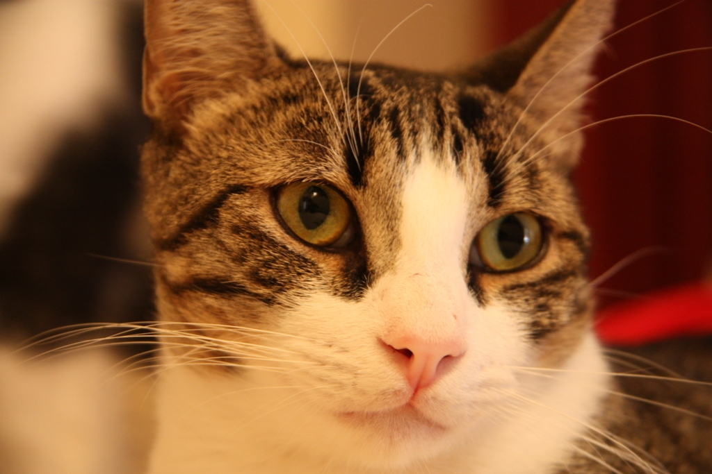
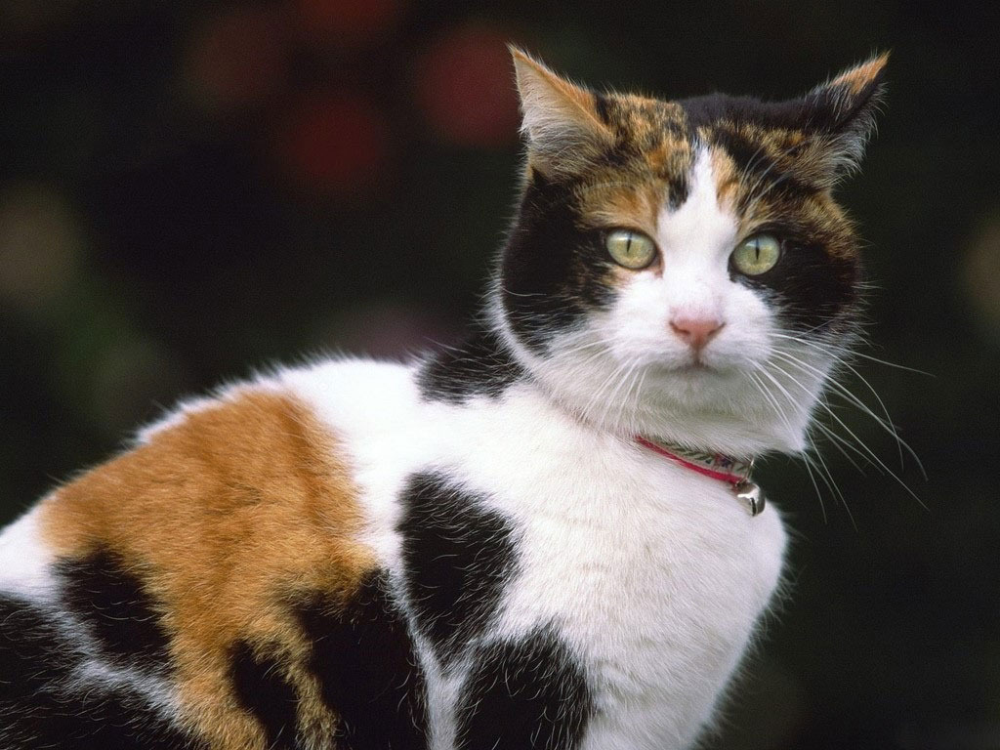

Beneficis de tenir gats
- Redueixen l'estrès i l'ansietat.
- Proporcionen companyia i alleugen la sensació de solitud.
- Ajuden a reduir la pressió arterial i el risc de malalties cardiovasculars.
- Són excel·lents caçadors de plagues, com aranyes i insectes.
- Promouen un ambient relaxant i reconfortant a casa.
- Ajuden a millorar l'estat d'ànim i reduir la depressió.
- Fomenten la interacció social i les habilitats de comunicació.
- Són divertits i entretinguts, proporcionant moments d'alegria.
- Poden ensenyar responsabilitat i cura als nens.
- Són adorables i carinyosos companys de vida.


